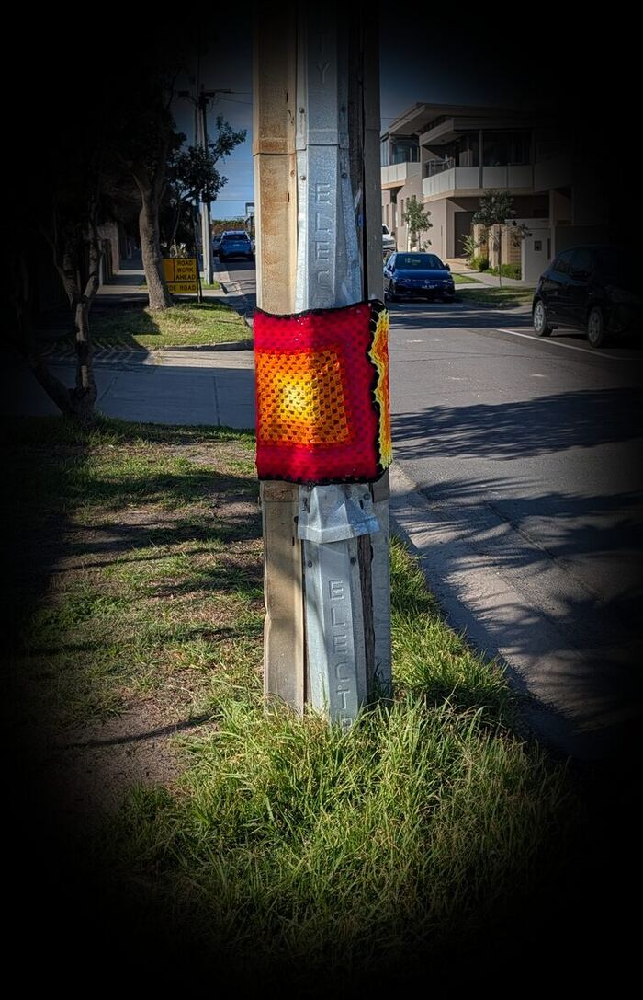

Each piece gathers memories, dreams, and old stories. A finished one is a map of belonging, woven with tenderness for land and people.

Yarnitti grows out of love for Edithvale: its bay, its wetlands, its people. I wrap the everyday furniture of the street in hand-crocheted wool, each piece carrying a QR code to the story behind it. A small way of making a place feel held.
It is a soft kind of resistance, and a quiet act of care: tending the streets we share the way you might tend a garden, or a friendship. Nothing here stays forever. The pieces come and go, and that is part of the gift. There is no intention to offend; if a piece is unwelcome, tell me and I will take it down.